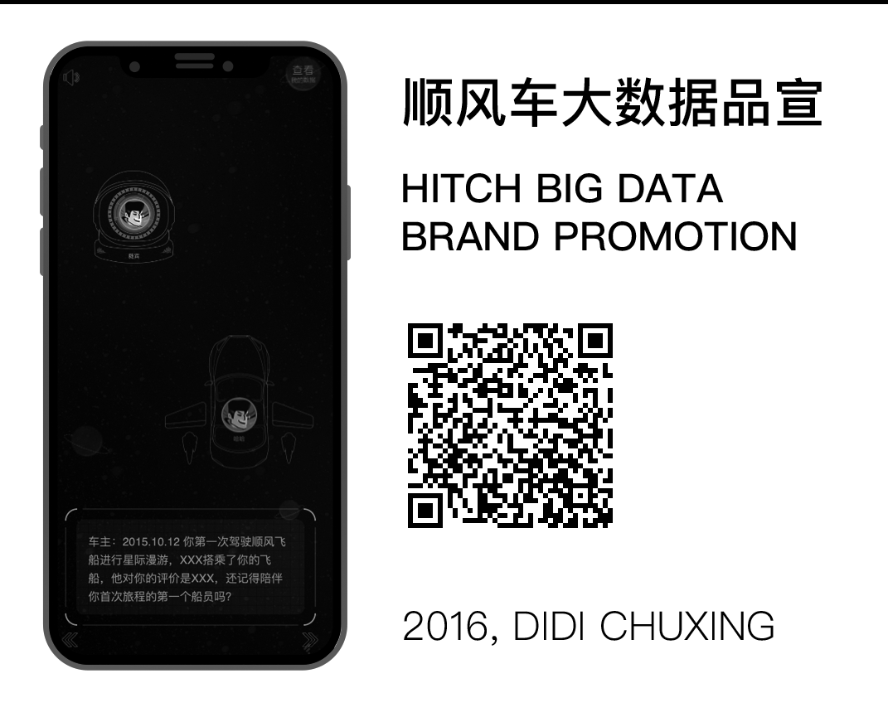
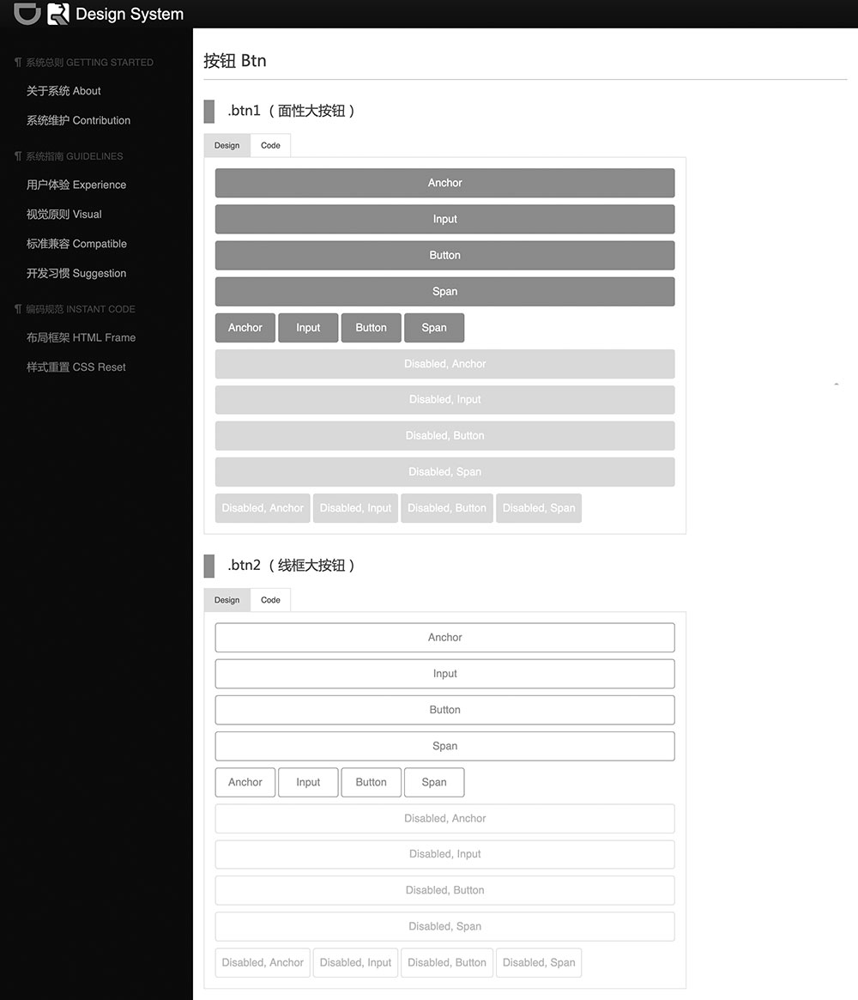
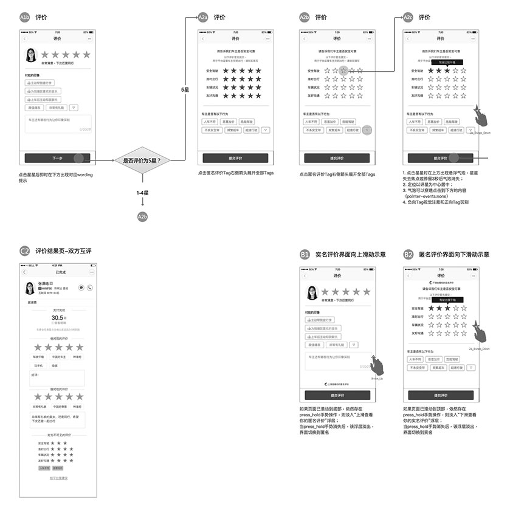
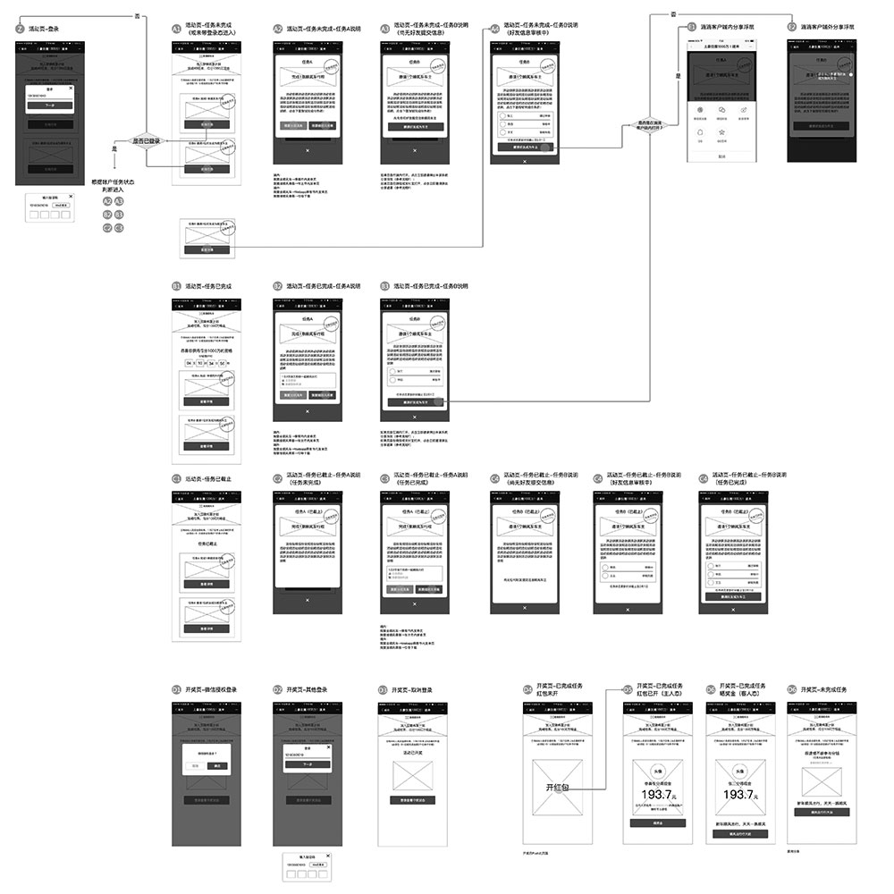
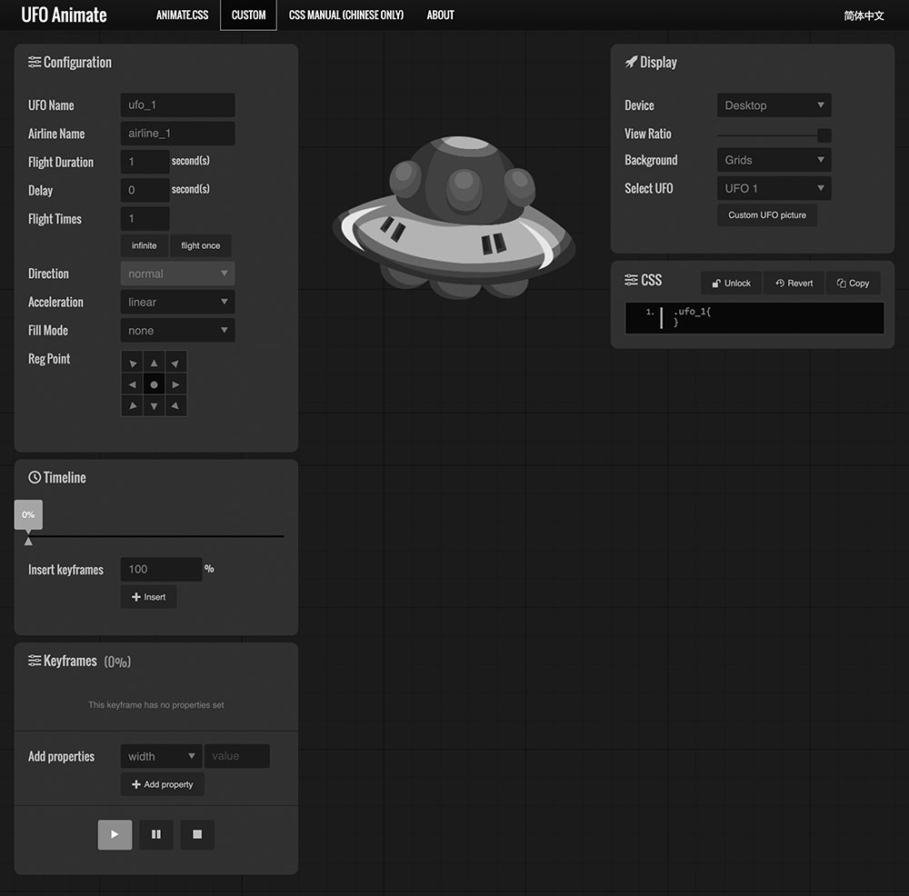

Portfolio
Dongfang is a UX designer who prefers social, content and education related products. He holds a master degree in the major of Chinese language & literature, as X-shaped, he has 10 years of experience on Web design and front-end development.
Since 2011, Dongfang has paid his attention in Content Strategy area. The “Future Friendly Web Design thinking” which was established by Jeremy Keith and friends was selected by Dongfang as the core methodology, it means that “Content First”, “Mobile First” and “Orbital Content” should be considered as the most important and significant rules in the design process.
Translation
-
 NAME: 《渐进增强：跨平台用户体验设计》(2017)
NAME: 《渐进增强：跨平台用户体验设计》(2017)
FROM: "Adaptive Web Design" (2015)
Written by Aaron GustafsonSAMPLE PARAGRAPH:
"He found that OS-wise, Windows use had dropped from 93.5 percent to 72.4 percent, no doubt because of the rise of Apple’s OS X and iOS as well as Google’s Android operating system. As you’d likely expect, he found that mobile usage (including tablets) had grown year over year at a rate of 200 to 400 percent from a paltry 0.1 percent in 2008 to 6.2 percent in 2012. Couple the decline of Windows with the rise of mobile and the launch of Chrome (which came out in 2008) and it’s no wonder Jason also saw a sharp decline in Internet Explorer’s numbers: Internet Explorer dropped from a dominant position, bringing 75.5 percent of their visits, to a mere 37 percent." (p. 93; ch. 4).
“从美国居民使用的操作系统来看，Windows 操作系统的占有率从93.5% 跌落到了72.4%，毋庸置疑，这些份额主要是被Apple 公司的OSX 和iOS 操作系统，以及Google 的Android 操作系统蚕食掉的。不出意料，他在文章中表示，移动设备（包括平板电脑）的使用率，逐年保持着200% 到400% 的高速增长，2008年移动设备的使用率还不足0.1%，而在2012 年，这个数字已经上涨为6.2%。考虑到Windows 的式微，移动设备的崛起，以及2008 年诞生的Chrome 浏览器的迅速普及，Jason 毫无意外地看到了IE 浏览器那摧枯拉朽般的份额下跌，从占市场支配地位的75.5%，腰斩至是年的37%。” (第79页; 第4章).
-
 NAME: 《JavaScript数据可视化编程》(2017)
NAME: 《JavaScript数据可视化编程》(2017)
FROM: "Data Visualization with JavaScript" (2015)
Written by Stephen A. ThomasSAMPLE PARAGRAPH:
"For this example, we’ll visualize one of the most important findings in modern physics—Hubble’s law. According to that law, the universe is expanding, and as a result, the speed at which we perceive distant galaxies to be moving varies according to their distance from us. More precisely, Hubble’s law proposes that the variation, or shift, in this speed is a linear function of distance. To visualize the law, we can chart the speed variation (known as red shift velocity) versus distance for several galaxies. If Hubble is right, the chart should look like a line. For our data, we’ll use galaxies and clusters from Hubble’s original 1929 paper but updated with current values for distance and red shift velocities." (p. 224; ch. 7).
“在本例中，我们将把现代物理学最重要的发现之一——哈勃定律——的效果用可视化实现出来。根据此定律，宇宙是无限延展的，由此，我们所能感知到的遥远的星系的移动速度，随着它距离我们的距离的变化而变化。更准确地说，哈勃定律提出，对于这一速度的任何的变化和转移，都与距离呈线性函数关系。为了更直观地观察这一定律，我们可以将速度的变化（也被称作是“红移光谱速度”）和几个星体之间的距离的关系制成图表。如果哈勃定律是正确的，那么这个图表看上去应该就是一条直线。而对于我们的数据来说，我们要使用的，是来自于哈勃于1929年发表的初版的论文，但又根据各星体距离和红移光谱速度而随时更新的即时值。” (第232页; 第7章).
Slides


Web Motion
-

-
Design System
-
"滴滴顺风车Web设计开发指南 - DiDi Hitch's Design System"
2016, DiDi Chuxing
Interaction Design
-
"顺风车行程结束评价页 - The Survey Page After A Hitch Journey"
2016, DiDi Chuxing
-
"完成任务赢一千万现金 - Do Task, Share 10 Million"
2016, DiDi Chuxing
Make Websites
-
"北京大学英文官方网站 - The International Official Website"
2015, for Peking University

Build Tools
-
"UFO Animate, An CSS Animation Tool"
2016, Personal Project